Every monotone function ![\(f \colon [a,b] \to \R\)](m/ea7523ee0e750ece60b78b197c477d8b9d00d721.svg) is Riemann
integrable.
is Riemann
integrable.
Assume  increasing (otherwise replace it by
increasing (otherwise replace it by  ); it is bounded,
since
); it is bounded,
since
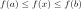
. Let and take the
partition
and take the
partition  into
into  equal subintervals of length
equal subintervals of length
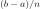
. On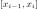
monotonicity gives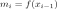
and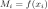
, so the sum telescopes: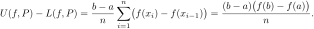
with this below  ; the
Riemann criterion gives integrability.
; the
Riemann criterion gives integrability.
There is a Riemann integrable function on ![\([0,1]\)](m/b40f419d16d54b95652910807100bb67f190c2b6.svg) whose set of
discontinuities is dense: continuity is sufficient for integrability
and far from necessary.
whose set of
discontinuities is dense: continuity is sufficient for integrability
and far from necessary.
Enumerate the rationals of as
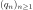
and set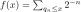
, the sum taken over those indices with 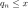
. The sum converges by comparison with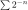
, and is increasing: enlarging  only adds
non-negative terms. At each
only adds
non-negative terms. At each 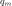
the value jumps by at least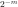
, since the term is present for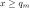
and absent below, so is discontinuous there by the jump
description of a monotone function's discontinuities. The rationals are
dense in , and , being monotone, is integrable.
Let be continuous. Then there is
![\(c \in [a,b]\)](m/0bf7096054fe5b8aa2944f6c6543b720ad75dd27.svg) with
with
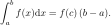
By the extreme value theorem attains a minimum  and a
maximum
and a
maximum  on
on ![\([a,b]\)](m/0a90b3bc64f7c9d00490784b86efd520680b7522.svg) , and it is integrable. Monotonicity of the
integral gives
, and it is integrable. Monotonicity of the
integral gives
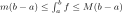
, so the number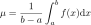
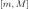
. Since and are attained, the
intermediate value theorem produces with
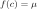
.
The hypothesis of continuity is used only in the last step, and it is
used essentially: for the integrable but discontinuous equal to
 on
on
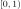
and at , the average
at , the average  is
attained, but a two-valued step function on
is
attained, but a two-valued step function on 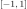
has average and never takes it. What the theorem really says is
that a continuous function attains its own average, which is the
intermediate value theorem wearing different notation.
and never takes it. What the theorem really says is
that a continuous function attains its own average, which is the
intermediate value theorem wearing different notation.